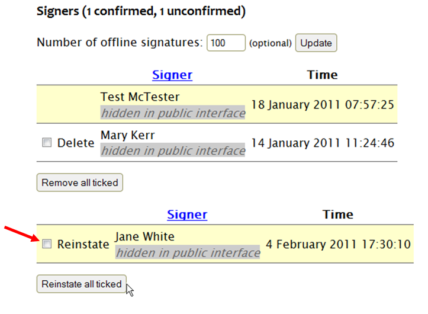

How to reinstate a removed signature
If a signature has been removed in error, or if a signer has requested that their signature be removed and then changed their mind, then the signature will need to be reinstated by an administrator. You should not advise the signer to “just sign the petition again” - the system prevents multiple signatures which use the same email address, and a “removed” signature is still in the system, just not visible to the public.
A signature can only be reinstated from the admin page for the relevant petition. All removed signatures are displayed underneath the current signatures. By the name of each removed signature there is a checkbox next to the word ‘Reinstate’. For any signature that you wish to reinstate, tick the checkbox and then click ‘Reinstate all ticked’:
This will put the signature back onto the petition.